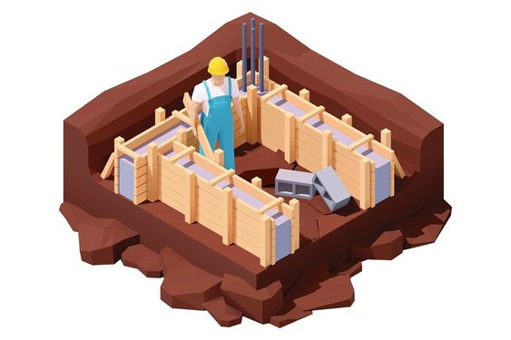

Roof Waterproofing
We provide roof waterproofing solutions to protect against leaks and weather damage.
-
Durable and weather-resistant coatings
Prevents mold and structural damage
10-year service warranty

Wall Waterproofing
Protect your walls from moisture and weather impacts.
-
Interior and exterior wall solutions
Eco-friendly and non-toxic materials
Customizable to match wall finishes

Foundation Waterproofing
Ensure the structural integrity of your foundation with our expert waterproofing services.
-
Deep-seal protection
Suitable for new and old structures
Comprehensive inspection included